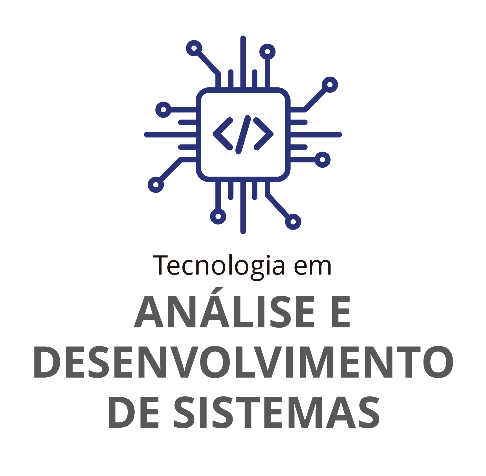

Tecnologia em Análise e Desenvolvimento de Sistemas

O curso de Tecnologia em Análise e Desenvolvimento de Sistemas do IFSP tem como objetivo formar profissionais capacitados para atuar na área de Tecnologia da Informação.
O profissional formado é capaz de analisar, desenvolver, testar, implantar e manter sistemas computacionais.
Informações do Curso
- Duração: 6 semestres
- Carga Horária: 2096,1 horas
- Modalidade: Presencial
- Turno: Noturno